SALTY!

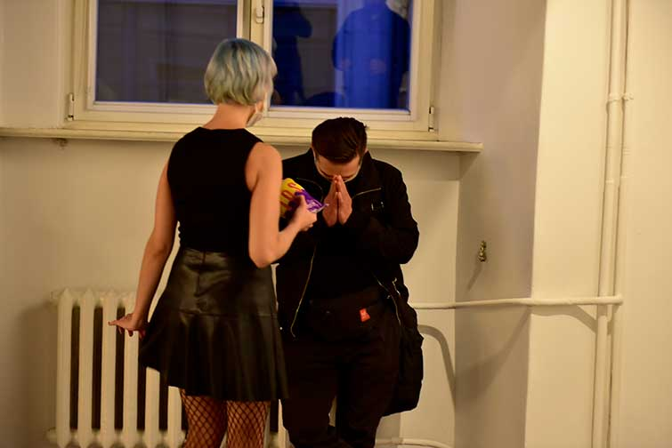
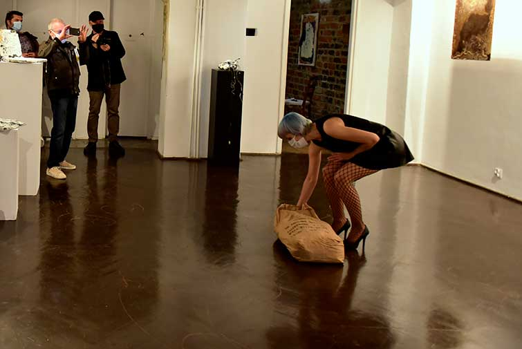
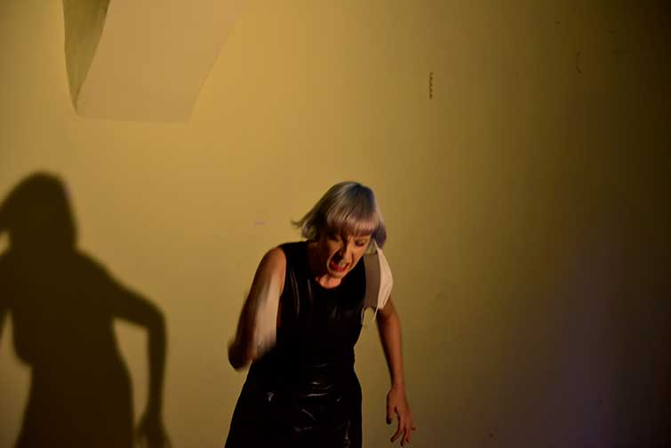
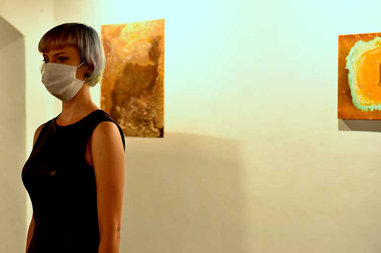
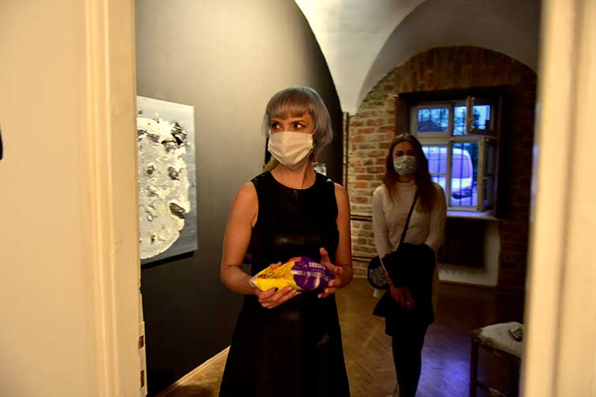
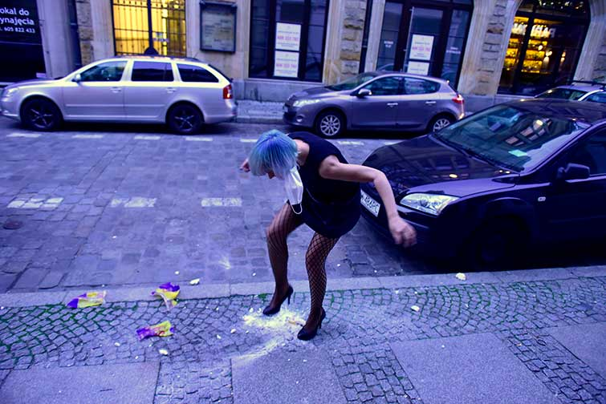
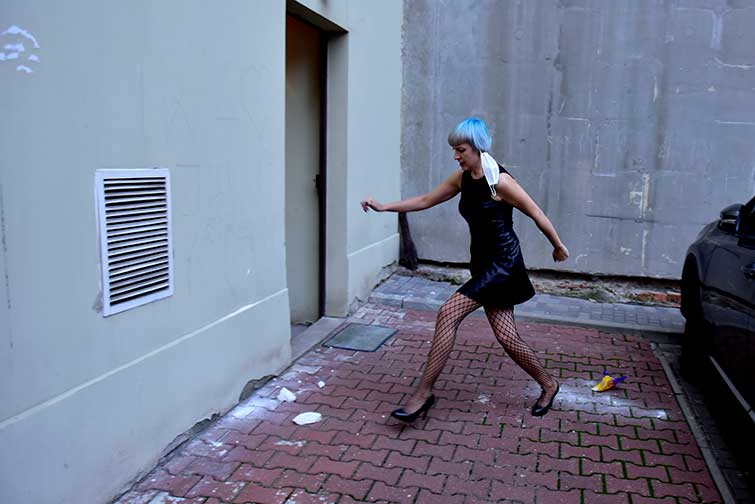
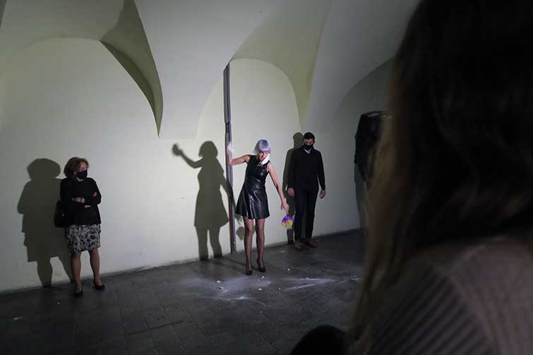
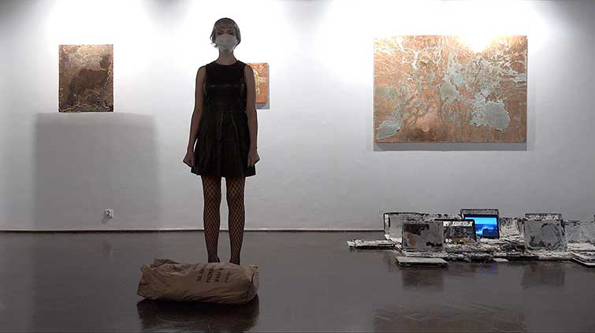
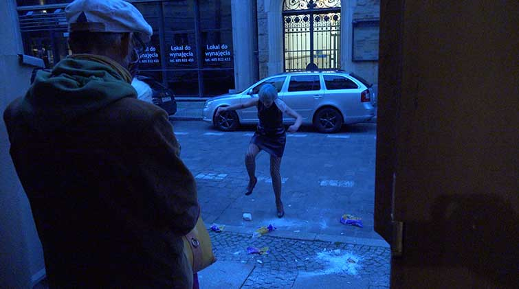
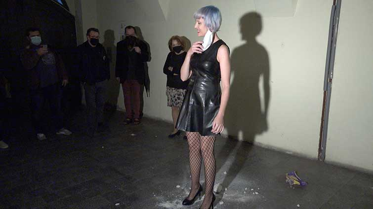
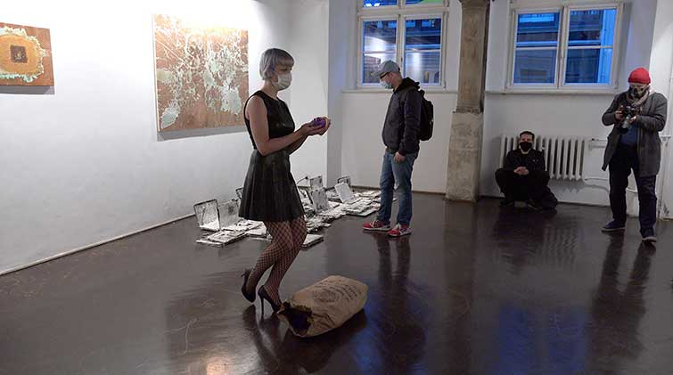
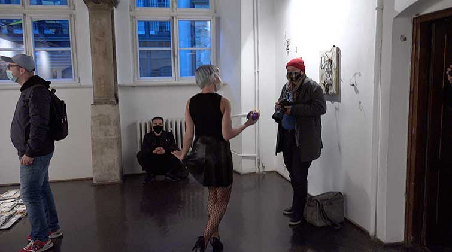
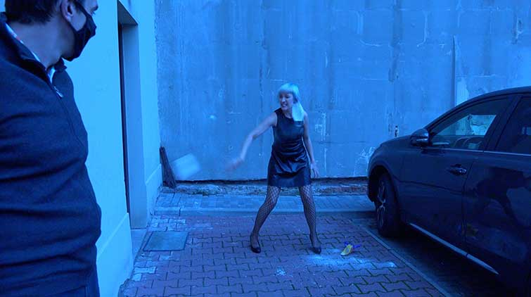
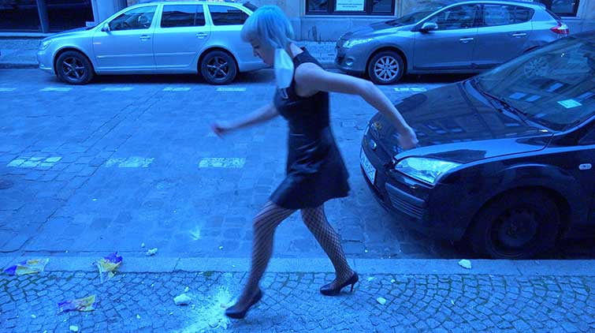
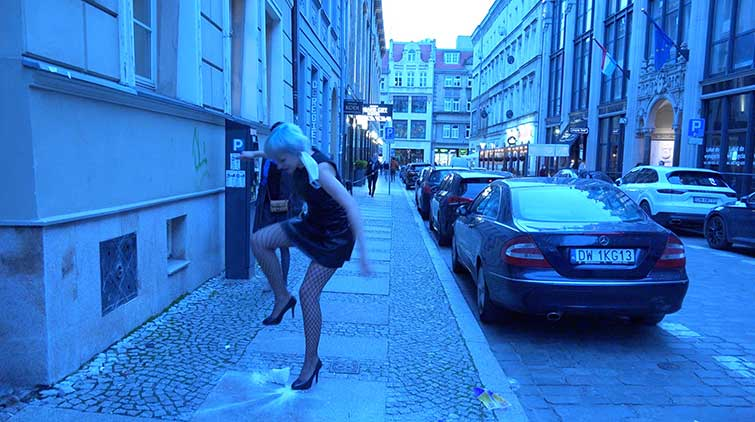
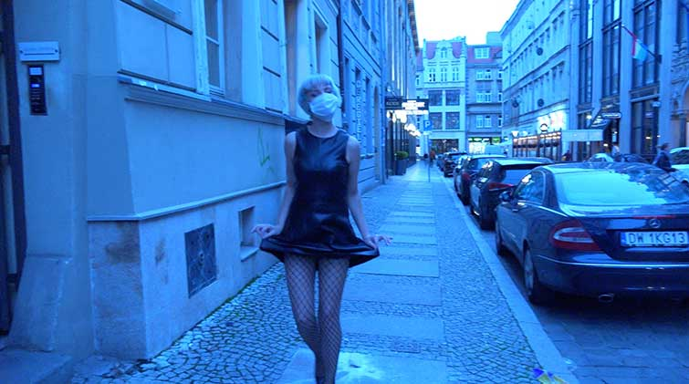
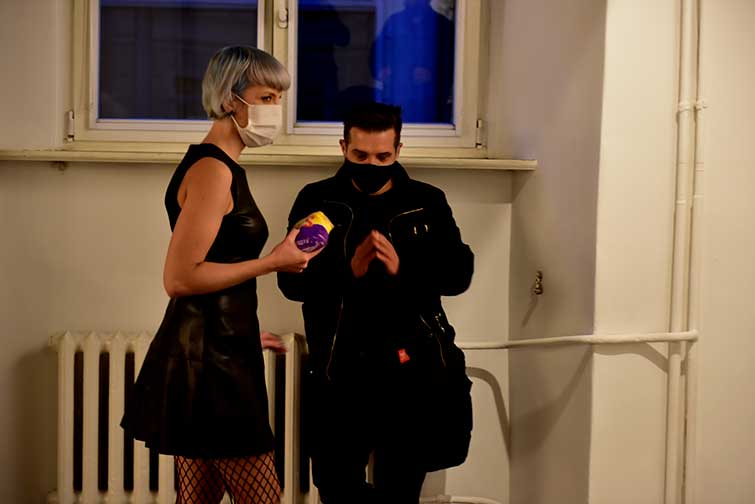
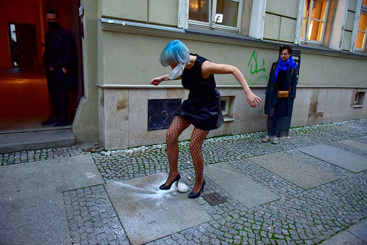
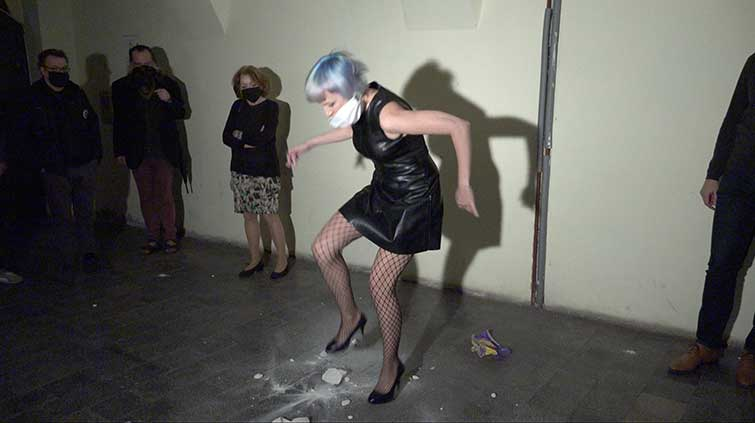
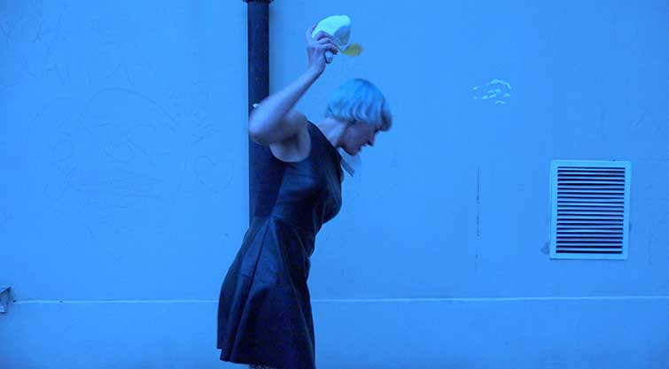
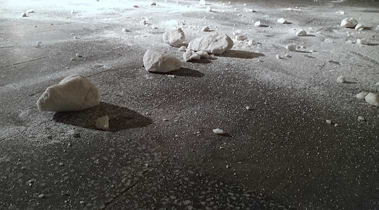
SALTY! perfomance odbyl sie na wystawie indywidualnej pt. "SERIOUSLY SALTY. Nowe materializacje" w Galerii Entropia we Wroclawiu dn. 08.10.2020.
Performance trwal okolo pol godziny i zostal zakonczony przez galerzystow Galerii Entropia, ktorzy usuneli worek z sola, bedacy podstawowym elementem performance.
kamera: Kalina Banka
montaz: Izabela Chamczyk
fot: dzieki uprzejmosci Galerii Entropia, Mariusz Jodko
fot: Kazimierz Zdzieblo